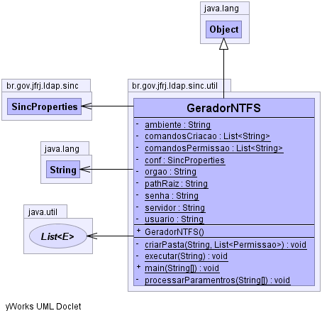

br.gov.jfrj.ldap.sinc.util
Class GeradorNTFS
java.lang.Object
 br.gov.jfrj.ldap.sinc.util.GeradorNTFS
br.gov.jfrj.ldap.sinc.util.GeradorNTFS
public class GeradorNTFS
- extends java.lang.Object
-
-

|
Method Summary |
private static void |
criarPasta(java.lang.String path,
java.util.List<Permissao> permissoes)
|
private static void |
executar(java.lang.String command)
|
static void |
main(java.lang.String[] args)
|
private static void |
processarParamentros(java.lang.String[] args)
|
| Methods inherited from class java.lang.Object |
clone, equals, finalize, getClass, hashCode, notify, notifyAll, toString, wait, wait, wait |
comandosCriacao
private static java.util.List<java.lang.String> comandosCriacao
comandosPermissao
private static java.util.List<java.lang.String> comandosPermissao
conf
private static SincProperties conf
servidor
private static java.lang.String servidor
usuario
private static java.lang.String usuario
senha
private static java.lang.String senha
pathRaiz
private static java.lang.String pathRaiz
ambiente
private static java.lang.String ambiente
orgao
private static java.lang.String orgao
GeradorNTFS
public GeradorNTFS()
main
public static void main(java.lang.String[] args)
throws java.lang.Exception
- Parameters:
args -
- Throws:
java.lang.Exception
processarParamentros
private static void processarParamentros(java.lang.String[] args)
throws AplicacaoException
- Throws:
AplicacaoException
criarPasta
private static void criarPasta(java.lang.String path,
java.util.List<Permissao> permissoes)
throws java.lang.InterruptedException
- Throws:
java.lang.InterruptedException
executar
private static void executar(java.lang.String command)
throws java.io.IOException,
java.lang.InterruptedException
- Throws:
java.io.IOException
java.lang.InterruptedException